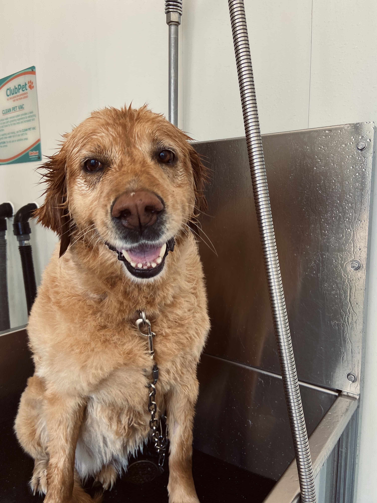

All About Me
A bit about me, I grew up in Cornwall Ontario. My interests are basketball, interior/graphic designing and playing card games. Graphic Design was not my first option. I was enrolled in Marketing at Carleton for 2 years but I did not enjoy it because it was too analytical for me. I switched to learn a more and kinaesthetic and creative approach.
My mom was a big influence of why I am so creative. I grew up trying a lot of different artistic hobbies with her. We are huge Pinterest fans, that’s where we found a lot of our inspiration. In my younger years it we pinned a lot of DIYs but in my current years I’ve got more into pinning interior design & theme parties to host.
"I once read that I should write something worth reading. Or I should do something worth writing about."
- The Ballroom Thieves
My Skills
- Leadership
- Team member
- Creative
- Computer Skills
Graphic Design Courses
- Computer Graphics
- Typography
- Web Design
- Graphic Design
- Communications
- Concept Sketch